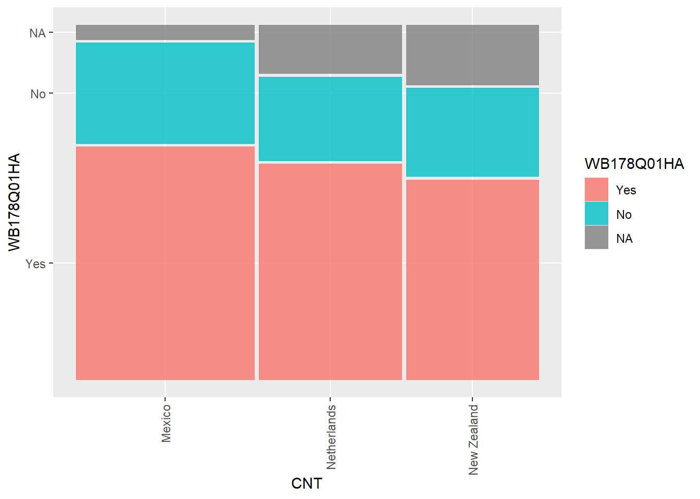
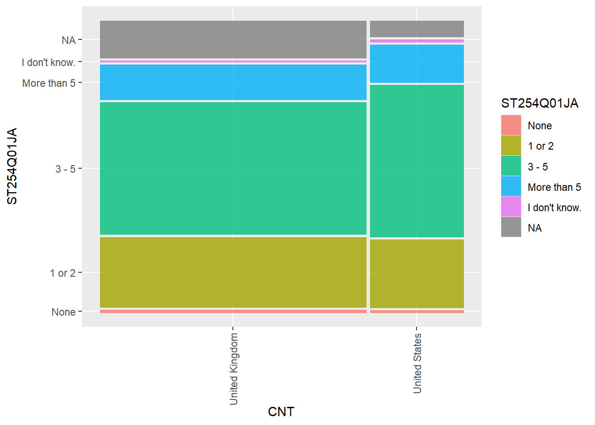
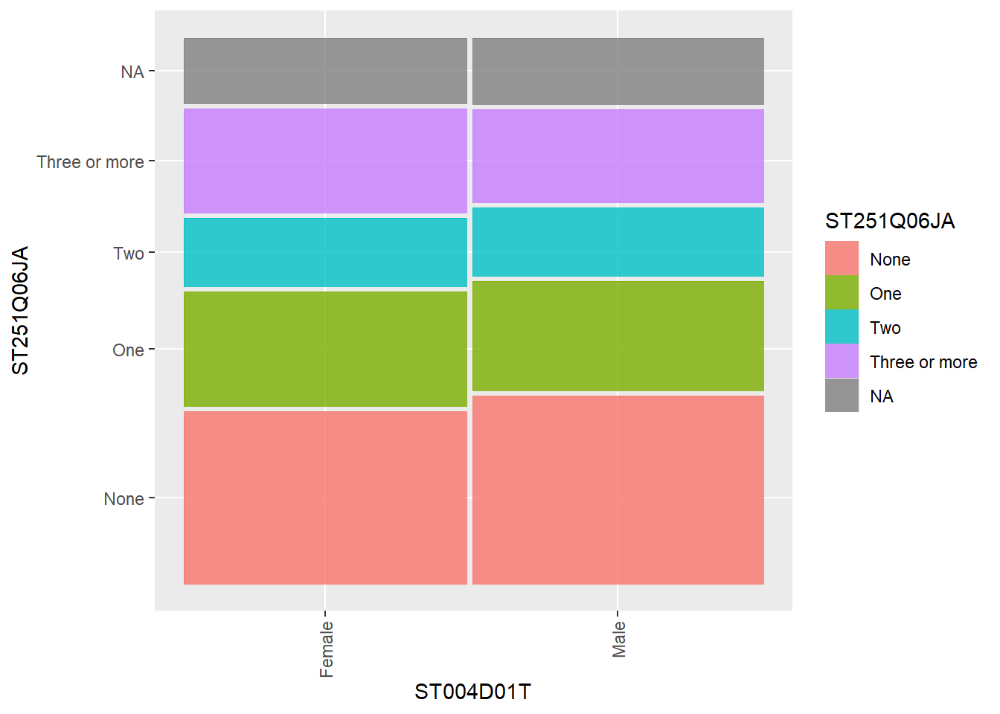
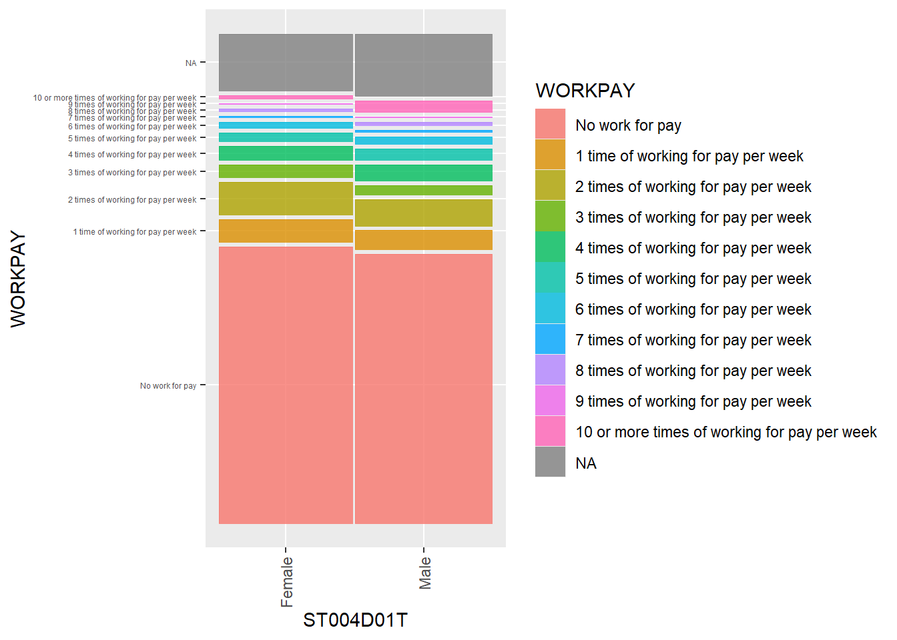

07 Hypothesis testing and Chi-square tests
0.1 Optional Pre-reading
Before the session, you may find it useful to read chapter 6, the basic elements of hypothesis testing, in Geher and Hall (2014) (available here).
0.2 Pre-session task - Loading the data
We will continue to use the PISA_2022 dataset, make sure it is loaded.
1 Chi-square tests
Chi squared (\(\chi^2\)) tests are non-parametric tests, this means that the test isn’t expecting the underlying data to be distributed in a certain way. Chi-squared determines how well the frequency distribution for a sample fits the population distribution and will let you know when things aren’t distributed as expected. For example you might expect girls and boys to have the same coloured dogs, a chi squared test can tell you whether the null hypothesis, that there is no difference between the colours of dogs owned by girls and boys, is true or not.
In more mathematical terms, chi squared examines differences between the categories of an independent variable with respect to a dependent variable measured on a nominal (or categorical) scale. A nominal scale has values that aren’t ordered, or continuous, for example gender or favourite flavour of ice cream.
1.1 Conditions of Chi-Square Tests
Four assumptions need to be met in order to use a chi-square test:
a) The data (both variables) should be categorical (for ordinal data, see the section on Kruskal Wallis tests below);
b) All observations are independent;
c) Cells in the contingency table (see below) are mutually exclusive;
d) Expected values in each cell in the contingency table should be five or greater for more than 80% of cells.
See Section 12.5 in Navaro’s Learning Statistics with R
1.2 Types of Chi-Square Tests
Chi-square tests can be categorised in two groups:
- A test of goodness of fit - this is a form of hypothesis test which determines whether a sample fits a wider population. For example, does the pattern of exam results in one school fit the national distribution?
- A test of independence - allows inference to be made about whether two categorical variables in a population are related. For example, are there differences in the uptake of careers by gender?
For more information on chi-square tests, see chapter 12, in Navaro’s Learning Statistics with R.
2 Performing chi square tests
2.1 Creating contingency tables
Chi-square calculations depend on contingency tables. A contingency table is a table that shows the frequency counts for two variables. We can use the xtabs function to create contingency tables in R.
For example, imagine we want to create a contingency table for the number of boys and girls in the UK and US in the PISA sample. First we create a subset of the PISA_2022 data.frame including country and gender, and filter for the two countries. We use the xtabs function to create the table. We pass the subset data (UKUSgender) to xtabs and indicate the columns and rows we want ~CNT + ST004D01T
# Example contingency table
# First create a data frame with the gender data for the UK and US
UKUSgender <- PISA_2022 %>%
1 select(CNT, ST004D01T) %>%
2 filter(CNT == "United Kingdom" | CNT == "United States") %>%
3 droplevels()
# The use xtabs to create a contingency table by ('~') country (CNT) and gender (ST004D01T)
4ContTable <- xtabs(data = UKUSgender, ~ CNT + ST004D01T)
ContTable- 1
-
selectthe needed columns gender (ST004D01T) and country (CNT) - 2
-
filterfor countries of interest, the UK and the US - 3
-
droplevels()to avoid empty country levels (those not selecting) cluttering the table at 0 counts - 4
-
use
xtabsto create a contingency table comparingCNTwithST004D01T
ST004D01T
CNT Female Male
United Kingdom 6397 6575
United States 2235 23123 Chi-square goodness of fit tests
If we want to determine if a sample categorical data matches the pattern of a whole population we can use a Chi-square goodness of fit test. The test is a form of hypothesis testing.
Hypothesis testing is one type of statistical analysis. A researcher states an assumption that they want to test.
For example, they might want to examine whether the distribution of boys and girls in the UK matches the expected distribution of 50:50.
A researcher typically proposes a null hypothesis - that is that there is no difference in groups. Whilst this is typical practice, and we will follow it in this course, researchers have pointed out that it is rare for the null hypothesis to be true, which impacts the validity of the test (see: Cohen (1994)) . Nonetheless, we will adopt the practice here, as it is a widely used approach.
Our null hypothesis then is:
There is no difference in the distribution of boys and girls in the UK and a random sample of 50/50 girls and boys.
Notice the ‘goodness of fit’ element - we are checking if some categorical data from a sample population (the UK) fits an expected pattern.
The outcome of a hypothesis test is typically reported by stating the value of some test (the test statistic, in this case, the Chi-squared statistic) which is used to calculate a significance level (or p-value). The p-value is the probability of obtaining test results at least as extreme as the result actually observed, under the assumption that the null hypothesis is correct.
This assumption has been critiqued, but in many research traditions, if the p-value is less than 0.05 (p>0.05) the result is taken to be statistically significant.
In the case of a Chi-squared goodness of fit test:
• If the p-value is greater than 0.05 (p>0.05) we accept the null hypothesis that the sample has been drawn from the wider population.
• If the p-value is less than 0.05 (p<0.05) we reject the null hypothesis that the sample has been drawn from the wider population.
It is important that care is taken when interpreting p-values. A p-value of below 0.05 does not mean the null hypothesis is false. Monya Baker provided a helpful summary of how to think of p-values:
“A P value of 0.05 does not mean that there is a 95% chance that a given hypothesis is correct. Instead, it signifies that if the null hypothesis is true, and all other assumptions made are valid, there is a 5% chance of obtaining a result at least as extreme as the one observed. And a P value cannot indicate the importance of a finding; for instance, a drug can have a statistically significant effect on patients’ blood glucose levels without having a therapeutic effect.”
See Baker (2016) for further discussion of how to interpret p-values.
3.1 An example: Does the disritbution of male and female students in the UK fit the expected pattern (50:50)?
To perform the goodness of fit test, we make a subset dataframe of the UK data including the ST004D01T (gender variable).
# Perform a chi-square goodness of fit test on categorical data related to gender in the UK
# Create a data frame of UK genders
UKPISAgender <- PISA_2022 %>%
1 select(CNT, ST004D01T) %>%
2 filter(CNT == "United Kingdom") %>%
3 droplevels()
# Use cross tabs to create a contingency table of the dataframe, by ST004D01T (gender)
4GenderContTable <- xtabs(data = UKPISAgender, ~ ST004D01T)
# Perfom the chisq test, comparing against the expected probabilities of 50:50 (e.g. 1/2 to 1/2)
5chisq.test(GenderContTable, p=c(1/2, 1/2))- 1
-
selectthe needed columns gender (ST004D01T) and country (CNT) - 2
-
filterfor country of interest, the UK - 3
-
droplevels()to avoid empty country levels (those not selecting) cluttering the table at 0 counts - 4
-
use
xtabsto create a contingency table comparingCNTwithST004D01T - 5
- perform the chi-sq test of goodness of fit, comparing against an expected probability of 50:50
Chi-squared test for given probabilities
data: GenderContTable
X-squared = 2.4425, df = 1, p-value = 0.1181The outcome of the chi squared test returns a p-value = 0.1181. This is greater than 0.05, suggesting we accept the null hypothesis, and the numbers of boys and girls in the UK sample matches a 50:50 distribution.
3.2 An example: Gender distribution in the PISA sample
- Should we accept or reject the hypothesis that the populations of boys and girls in the United States, Japan and Korea are 50:50?
Show the code
# Perform a chi-square goodness of fit test on categorical data related
# to gender in the US, Japan and China
USPISAgender<-PISA_2022 %>%
1 select(CNT, ST004D01T) %>%
2 filter(CNT == "United States") %>%
3 droplevels()
# produce the contingency table by country and gender
4GenderContTable <- xtabs(data = USPISAgender, ~ ST004D01T)
# Perform the chisq test, comparing against the expected probabilities of 50:50 (e.g. 1/2 to 1/2)
5chisq.test(GenderContTable, p = c(1/2, 1/2))
# In the US, p= 0.2535, accept null hypothesis of equality, population of M:F is 50:50
JPNPISAgender <- PISA_2022 %>%
select(CNT, ST004D01T) %>% # Select gender and country variables
filter(CNT == "Japan") %>% # Filter for the Japan
droplevels() # To prevent the levels for other countries confusing the table
# produce the contingency table by country and gender
GenderContTable <- xtabs(data = JPNPISAgender,~ ST004D01T)
# Perfom the chisq test, comparing against the expected probabilities of 50:50 (e.g. 1/2 to 1/2)
chisq.test(GenderContTable, p = c(1/2, 1/2))
# In Japan, p= 0.5271, accept null hypothesis of equality, population of M:F differs from 50:50
KoreaPISAgender <- PISA_2022 %>%
select(CNT, ST004D01T) %>% # Select gender and country variables
filter(CNT == "Korea") %>% # Filter for Korea
droplevels() # To prevent the levels for other countries confusing the table
# produce the contingency table by country and gender
GenderFreqTable <- xtabs(data=KoreaPISAgender, ~ ST004D01T)
# Perform the chisq test, comparing against the expected probabilities of 50:50 (e.g. 1/2 to 1/2)
chisq.test(GenderFreqTable, p = c(1/2, 1/2))
# In Korea, p=0.0147, reject null hypothesis of equality.- 1
-
selectthe needed columns gender (ST004D01T) and country (CNT) - 2
-
filterfor country of interest, the US - 3
-
droplevels()to avoid empty country levels (those not selecting) cluttering the table at 0 counts - 4
-
use
xtabsto create a contingency table comparingCNTwithST004D01T - 5
- perform the chi-sq test of goodness of fit, comparing against an expected probability of 50:50
R uses standard form: an output of p= 3.724e-06, represents, p=3.724x10-6, or p = 0.0000003724.
3.3 Effect sizes for chi-square tests
Chi-square tests can tell us if two categorical variables are related, but they do not tell us how strong the relationship is. To do this we can calculate an effect size. For chi-square tests, a common effect size is Cramer’s V. For the example above, we can calculate Cramer’s V using the cramersV function in the lsr package. Recall the test of goodnesss of fit for Does the disritbution of male and female students in South Korea fit the expected pattern (50:50)?
KoreaPISAgender <- PISA_2022 %>%
select(CNT, ST004D01T) %>%
filter(CNT == "Korea") %>%
droplevels()
GenderContTable <- xtabs(data = KoreaPISAgender, ~ST004D01T)
chisq.test(GenderContTable, p=c(1/2, 1/2))
# find the effect size using Cramer's V
library(lsr)
cramersV(GenderContTable)
# Cramer's V = 0.03, a very small effect sizeInterpreting Cramer’s V
How to interpret Cramer’s V depends on the degrees of freedom (df). The degrees of freedom is calculated as: df = (r - 1)(c - 1)
where r is the number of rows and c is the number of columns in the contingency table.
For example, a 2x2 table, df = 1. If there is only one row in the table, but several columns, df = number of columns - 1.
The interpretation of Cramer’s V for different degrees of freedom is as follows:
| Degrees of Freedom (df) | Small Effect | Medium Effect | Large Effect |
|---|---|---|---|
| 1 | 0.1 | 0.3 | 0.5 |
| 2-4 | 0.07 | 0.21 | 0.35 |
| 5-9 | 0.05 | 0.15 | 0.25 |
| 10+ | 0.04 | 0.13 | 0.20 |
4 Chi-square test of independence
Goodness of fit tests can be useful, but they rely on knowing the expected distribution (for example, assuming a 50:50 distribution of boys and girls).
An alternative ways of using a Chi-square test, is the test of independence. This approach determines whether two categorical variables in a sample are related.
For example, a categorical variable in the data set is item - WB178Q01HA - Overall, did you feel that you accomplished something yesterday?. Which can be responded to with ‘yes’ or ‘no’ (or <NA>).
We might want to see if students in the Netherlands respond to this question in the same way as other countries, for example Mexico and New Zealand. That is, are students in Netherlands just as likely to feel they have accomplished something as their peers in Mexico and New Zealand.
A simple first attempt is to create frequency tables for the Netherlands and the rest of the sample and examine the responses.
# Produce tables of counts of accomplishment for the Netherlands and Mexico and New Zealand
# Create a data frame of accomplishment data for Mexico and New Zealand
MexNZAccomp <- PISA_2022 %>%
2 select(CNT, WB178Q01HA) %>%
filter(CNT == "Mexico"| CNT == "New Zealand") %>%
3 droplevels() %>%
4 na.omit()
# Create the contingency table for the Mexico and NX and print it
MexNZAccompAccompTable <- xtabs(data = MexNZAccomp, ~ WB178Q01HA)
print(MexNZAccompAccompTable)
# Create the data frame and contingency table for the Netherlands and print it
NethAccomp <- PISA_2022 %>%
select(CNT, WB178Q01HA) %>%
filter(CNT == "Netherlands") %>%
droplevels()
NethAccompTable <- xtabs(data=NethAccomp, ~ WB178Q01HA)
print(NethAccompTable)- 2
-
droplevels()to avoid empty country levels (those not selecting) cluttering the table at 0 counts - 3
- remove na values
- 4
-
use
xtabsto create a contingency table forWB178Q01HA
WB178Q01HA
Yes No
6903 3008
WB178Q01HA
Yes No
3131 1212 From the data, it is hard to tell if the Netherlands data is different from the overall pattern. To make things easier, we can use mutate to add a percentage column to aid comparison.
# Produce tables of counts of having accomplished for the Netherlands and for New Zealand and Mexico
# Create a data frame of accomplishment
Accomp <- PISA_2022 %>%
1 select(WB178Q01HA, CNT) %>%
filter(CNT == "Mexico"| CNT == "New Zealand") %>%
2 droplevels()
# turn the data frame into a contingency table - and then convert to a data frame for easier manipulation
3AccompFreqTable <- xtabs(data = Accomp, ~ WB178Q01HA)
4AccompFreqTable <- as.data.frame(AccompFreqTable)
# Sum to find the total count
5Total <- sum(AccompFreqTable$Freq)
# Use mutate to add a new column, Perc, which is Freq/Total*100 to give the percentage
AccompFreqTable <- AccompFreqTable%>%
6 mutate(Perc = (Freq * 100) / Total)
print(AccompFreqTable)
# Repeat for the Netherlands
NethAccompFreqTable <- PISA_2022 %>%
select(CNT, WB178Q01HA) %>% # Select accomplishment and country variables
filter(CNT == "Netherlands") %>% # Filter for the Netherlands
droplevels() # To prevent the levels for other countries confusing the table
NethAccompFreqTable <- xtabs(data = NethAccompFreqTable, ~ WB178Q01HA)
NethAccompFreqTable <- as.data.frame(NethAccompFreqTable)
Total <- sum(NethAccompFreqTable$Freq) # Find the total count
NethAccompFreqTable <- NethAccompFreqTable%>%
mutate(Perc = (Freq * 100)/Total) # Mutate the table to calculate percentage
print(NethAccompFreqTable)- 1
-
selectthe needed columns accomplishment (WB178Q01HA) - 2
-
droplevels()to avoid empty country levels (those not selecting) cluttering the table at 0 counts - 3
-
use
xtabsto create a contingency table forWB178Q01HA - 4
-
convert the result of
xtabsinto a data frame for easier manipulation - 5
- calculate the total frequency, for use in calculating the percentage
- 6
-
use
mutateto add a new percentage column given by the calculation of the frequency divided by the total multiplied by 100(Perc = (Freq * 100) / Total)
4.1 Plotting the chi-square relationships
The numbers in the contingency table are hard to interpret - it is challenging to see how far out the numbers for each row are from each other. Alternatively, we can visualise the data from the contingency table by building a mosaic plot, a form of stacked bar chart. Mosaic plots can be a useful visualisation before running a chi-squared test.
To create a mosaic plot, you are going to need to install and load the ggmosaic package. The code below will install the package:
Imagine we want to plot the ‘accomplishment’ data (WB178Q01HA) from the previous section for the Netherlands, Mexico and New Zealand.
To create the mosaic plot we use ggplot, as we used for previous graphs. As before, we first pass the data (in this case Accomp) to ggplot. Then, to create the graph, geom_mosaic is used. geom_mosaic does not have a direct mapping of input to x and y variable so we need to pass it what we want plotted on the y-axis (WB178Q01HA) and x-axis (CNT) within the product function (product(WB178Q01HA, CNT)). We can also specify how we want the rectangles to be coloured (in our case, by CNT).
library(ggmosaic) # load the ggmosaic package
# Create a data frame of accomplishment data for the 3 countries
Accomp <- PISA_2022 %>%
select(WB178Q01HA, CNT) %>%
filter(CNT %in% c("Netherlands", "Mexico", "New Zealand")) %>%
droplevels()
# plot results
# Note that with geom_mosaic you pass the x and y variables using: aes(x = product(WB178Q01HA, CNT))
ggplot(data = Accomp) +
1 geom_mosaic(aes(x = product(WB178Q01HA, CNT), fill = WB178Q01HA)) +
2 ylab("Feeling of accomplishment") +
xlab("Country") +
3 theme(axis.text.x = element_text(angle = 90, vjust = 0.5, hjust=1))- 1
-
set the two variables to be plotted
CNTandWB178Q01HAand pass the data to be plotted(data = Accomp) - 2
- set the title
- 3
- rotate the text on the axes

Note that in the mosaic plot the width of the bars represents the number of students in the sample for each country.
4.2 Running Chi-square tests of independence
The mosaic plot suggests that students’ feeling of accomplishment is different in Mexico, the Netherlands and New Zealand. Simply looking at the data does not tell us if the distributions are different - a Chi-square tests of independence can report the significance level, which can help us make a judgement.
The null hypothesis in a test of independence is that the categorical variables are not related. So in the case of comparing Mexico and the Netherlands the null hypothesis is: ‘There is no difference between students’ sense of accomplishment in Mexico and the Netherlands’.
# Produce tables of counts of having accomplished something for Mexico and the Netherlands
AccompNethMex <- PISA_2022 %>%
1 select(WB178Q01HA, CNT) %>%
2 filter(CNT == "Netherlands"| CNT == "Mexico") %>%
3 droplevels()
# Produce the contingency table for the NZ and Mexico
4AccompNethMexFreqTable <- xtabs(~ WB178Q01HA + CNT, data = AccompNethMex)
# Print the table
print(AccompNethMexFreqTable)
# Perform Chisq test between NZ and Mexico
5chisq.test(AccompNethMexFreqTable)
# p-value < 0.01427, less than 0.05, so there is a statistically significant differences in feelings of accomplishment between NZ and Mexico, the null hypothesis is rejected- 1
-
select the accomplishment (
WB178Q01HA) and country variable - 2
- filter for New Zealand and Mexico
- 3
- drop levels to keep the table clean
- 4
-
use
xtabsto create the contingency table for accomplishment (WB178Q01HA) by country - 5
- perform the chi.sq test
CNT
WB178Q01HA Mexico Netherlands
Yes 4213 3131
No 1818 1212
Pearson's Chi-squared test with Yates' continuity correction
data: AccompNethMexFreqTable
X-squared = 6.0044, df = 1, p-value = 0.01427The test here returns a p-value=0.01427. This is less than 0.05 so suggests we do not accept the null hypothesis. We assume then there is a difference between feelings of accomplishment in New Zealand and Mexico.
As with the goodness of fit test, we can calculate Cramer’s V to determine the effect size of the relationship.
5 Testing ordinal data - the Kruskal Wallis test
An assumption of a chi-square test is that the data are categorical. Some of the items in the PISA are a type of categorical data which come in naturally ordered sequence - ordinal data. For example, gender is a categorical variable with no preferred order to responses: female or male. By contrast, the answer to a question: How many books do you have in your home? 0-10; 11-100; 101-200; More than 200, is ordinal data.
Though there is some debate among statisticians, if testing ordinal data, it is recommended you use an alternative to the chi-square test, the Kruskal Wallis test, which functions in a similar manner. It is called using the kruskal.test function. Unlike the chi square test, you pass it the raw data, rather than a contingency table.
For example,ST251Q01JA asks students to report the number of cars in their home, ordinal data. To carry out the Kruskal Wallis on differences in car ownership in the UK by gender we create a data.frame of responses to ST012Q02TA in the UK by gender. Unlike the chi square test, there is no need to create a contingency table and we just pass the data frame to kruskal.test, specifying we want to compare number of cars (ST251Q01JA) to gender (ST004D01T): kruskal.test(data=CarsUKGender, ST251Q01JA ~ ST004D01T)
# Create a data frame including data on cars and gender for the UK
CarsUKGender <- PISA_2022%>%
1 select(CNT, ST004D01T, ST251Q01JA ) %>%
2 filter(CNT == "United Kingdom") %>%
3 select(ST004D01T, ST251Q01JA ) %>%
4 droplevels()
5kruskal.test(data = CarsUKGender, ST251Q01JA ~ ST004D01T)
# The p-value is more than 0.05 (p-value=0.8736), therefore we accept the null hypothesis that the number of cars is the same for boys and girls- 1
- choose country, no of cars and gender
- 2
- filter for the UK
- 3
- drop country variable now filtering is done
- 4
-
remove other countries which exist as factors (
WB178Q01HA) by country - 5
- perform the kruskal test
Kruskal-Wallis rank sum test
data: ST251Q01JA by ST004D01T
Kruskal-Wallis chi-squared = 0.025303, df = 1, p-value = 0.87365.1 Effect sizes with ordinal data
As with chi-square tests, it is possible to calculate an effect size for the Kruskal Wallis test. A common effect size is eta squared, which can be calculated using the kruskal_effsize function in the rstatix package.
# A tibble: 1 × 5
.y. n effsize method magnitude
* <chr> <int> <dbl> <chr> <ord>
1 ST251Q01JA 11414 0 eta2[H] small 5.2 Post-hoc tests after a Kruskal Wallis test
Just like with the Tukley test after an ANOVA, if you find a significant result with a Kruskal Wallis test, you can perform post-hoc tests to determine which groups differ from each other. A common post-hoc test for the Kruskal Wallis is the Dunn test, which can be performed using the dunn_test function in the rstatix package.
# Perform a Dunn test to find which groups differ from each other
# install.packages("rstatix")
library(rstatix)
Cars_countries <- PISA_2022%>%
select(CNT, ST251Q01JA ) %>%
filter(CNT %in% c("United Kingdom", "United States", "Peru", "Cambodia")) %>%
droplevels()
dunn_test(Cars_countries, ST251Q01JA ~ CNT, p.adjust.method = "bonferroni")# A tibble: 6 × 9
.y. group1 group2 n1 n2 statistic p p.adj p.adj.signif
* <chr> <chr> <chr> <int> <int> <dbl> <dbl> <dbl> <chr>
1 ST251Q01… Unite… Cambo… 11414 4895 -74.5 0 0 ****
2 ST251Q01… Unite… Peru 11414 6787 -81.0 0 0 ****
3 ST251Q01… Unite… Unite… 11414 4349 23.3 1.05e-119 6.32e-119 ****
4 ST251Q01… Cambo… Peru 4895 6787 1.66 9.61e- 2 5.77e- 1 ns
5 ST251Q01… Cambo… Unite… 4895 4349 81.0 0 0 ****
6 ST251Q01… Peru Unite… 6787 4349 85.2 0 0 **** 6 Seminar Tasks
6.1 Task 1 - Creating contingency tables
- Create a contingency table for UK, Germany and France levels of maternal education (
ST005Q01JA). In which countries are most mothers (in total) educated to post school level?
The responses to ST005Q01JA are:
| ISCED Level | Description |
|---|---|
| <ISCED level 3.4> | Post-secondary non-Tertiary Education |
| <ISCED level 3.3> | Upper Secondary Education |
| <ISCED level 2> | Lower Secondary Education |
| ISCED level 1> | Primary Education |
| She did not complete <ISCED level 1> |
Show the code
# Create contingency table of mother's level of education
# Create a data frame of mother's level of education
MatEd<-PISA_2022%>%
select(CNT, ST005Q01JA)%>% # Select maternal ed and country variables
filter(CNT == "United Kingdom"| CNT=="France"|CNT=="Germany")%>%
# Filter for CNT
droplevels() # To prevent the levels for other countries confusing the table
# Turn data frame into a contingency table
ContTab<-xtabs(~ST005Q01JA + CNT, data = MatEd)
ContTab CNT
ST005Q01JA Germany France United Kingdom
<ISCED level 3.4> 2021 4697 5929
<ISCED level 3.3> 0 982 3769
<ISCED level 2> 2546 416 534
<ISCED level 1> 0 86 88
She did not complete <ISCED level 1>. 175 171 86ST261Q04JAasks if, in the last 3 months, students’ transport difficulties stopped students getting to school. Create a contingency table by gender for this variable for students in the UK. Do more girls or boys have transport difficulties?
Show the code
# Create contingency table of having transport difficulties
# First, create a data frame of having a desk in the UK
DeskUK <- PISA_2022 %>%
select(CNT, ST261Q04JA, ST004D01T) %>% # Select transport & country variables
filter(CNT == "United Kingdom") %>% # Filter for the UK
droplevels() # To prevent the levels for other countries confusing the table
# Convert the data frame to a contingency table
ContTab <- xtabs(~ST261Q04JA + ST004D01T, data = DeskUK)
ContTab ST004D01T
ST261Q04JA Female Male
Yes 26 38
No 334 392ST250Q05JAasks if students have access to the internet. In which country in the data frame do students report the highest levels of access to the internet?
Show the code
To sort a table, the easiest way is to convert it to a data frame and then use the arrange function. The default order for arrange is ascending, adding desc switches to descending.
# A tibble: 79 × 2
# Groups: CNT [79]
CNT n
<fct> <int>
1 Spain 29350
2 United Arab Emirates 22206
3 Canada 21206
4 Kazakhstan 17450
5 Australia 12808
6 United Kingdom 11236
7 Argentina 10484
8 Italy 10026
9 Finland 9745
10 Brazil 9379
# ℹ 69 more rows6.2 Task 2 - Goodness of fit test. Are the responses of the survey in proportion to populations?
The populations of three countries in the sample are:
| Country | Population | Ratio |
|---|---|---|
| US | 332 million | 0.69 |
| Germany | 83 million | 0.17 |
| UK | 67 million | 0.14 |
Are the number of responses in the sample a good fit for the overall populations?
Use a goodness of fit implementation of Chi square with the null hypothesis that the proportion of students in the sample of PISA match that of the overall population.
Find a Cramer’s V effect size for the test.
Hint: As we only have one variable here, numbers in each country, we don’t use xtabs to count - instead we can use group_by(CNT) and count() (don’t forget to use drop_levels() . For example, to create counts of the number of entries in the PISA data for France, Spain and Italy, you can use the code below:
# A tibble: 3 × 2
# Groups: CNT [3]
CNT n
<fct> <int>
1 Spain 30800
2 France 6770
3 Italy 10552Show the code
# Create a data frame of entries in the data for the UK, US and Germany
Subset <- PISA_2022 %>%
select(CNT) %>%
filter(CNT == "United Kingdom"|CNT == "United States"|CNT == "Germany") %>%
group_by(CNT)%>%
count()%>%
droplevels()
# perfom the test
chisq.test(Subset$n, p = c(0.17, 0.14, 0.69))
# P is < 2.2e-16 indicating that
# The UK has many more responses that expected by proportion of its size.
# Find the effect size using Cramer's V
library(lsr)
cramersV(Subset$n, p = c(0.17, 0.14, 0.69))
# Cramer's V = 0.54, a large6.3 Task 3 - Goodness of fit test: Birth month distribution
Perform a goodness of fit test to determine if the birth months (ST003D02T) of respondents are distributed as expected in
- the whole sample;
- in the UK. Use ggplot to plot a column graph of both data sets (the world and the UK).
- What might explain any patterns you see.
Hint - you can use the rep function to save you typing. For example, if you want to set a variable to be 0.1 ten times, you use variable<-c(rep(0.1, times=10))
Show the code
# Create a data frame of counts of birth months
Worldmonth <- PISA_2022 %>%
select(ST003D02T) %>%
group_by(ST003D02T) %>%
droplevels() %>%
na.omit()
# Create a contingency table of birth months
WorldmonthFreqTable <- xtabs(data=Worldmonth, ~ ST003D02T)
# Create an expected variable - hint rep repeats a value a specified number of times - to reduce typing
Expected <- c(rep(1/12, times=12))
chisq.test(WorldmonthFreqTable, p = Expected)
# p-value = 2.2e-16, don't accept the null hypothesis.
# The world data does not follow the expected distribution or birth months
# find the effect size
cramersV(WorldmonthFreqTable)
# there are 11 degrees of freedom
# Cramer's V = 0.014, not even a small effect size
UKmonth <- PISA_2022 %>%
select(ST003D02T, CNT) %>%
filter(CNT=="United Kingdom") %>%
group_by(ST003D02T) %>%
droplevels() %>%
na.omit()
# Create a contingency table of birth months in the UK
UKmonthtable <- xtabs(data=UKmonth, ~ ST003D02T)
# Set the expected values
Expected <- c(rep(1/12, times=12))
# Perform the test
chisq.test(UKmonthtable, p = Expected)
# p-value = 0.0002224, don't accept the null hypothesis.
# The world data does not follow the expected distribution or birth months
# find the effect size
cramersV(UKmonthtable)
# there are 11 degrees of freedom
# Cramer's V = 0.015, not even a small effect size
ggplot(data = Worldmonth,
aes(x=ST003D02T, y = n, fill = ST003D02T)) +
geom_col() +
ggtitle("World birth months")
ggplot(data = UKmonth,
aes(x=ST003D02T,y = n, fill = ST003D02T)) +
geom_col() +
ggtitle("UK birth months")6.4 Task 4 - Country differences - hypothesis testing
Perform a hypothesis test to determine:
ST250Q01JAasks students if they have a room of there own. Test the hypothesis that there is no difference in having a room between students in the UK, US, New Zealand and Australia.
Plot a mosaic plot of the proportions
Show the code
# Create a data frame of having a room (ST250Q01JA) for the 4 countries
Room <- PISA_2022 %>%
select(CNT, ST250Q01JA) %>% # choose country and room
filter(CNT == "United Kingdom"|CNT == "United States"|
CNT == "New Zealand"|CNT == "Australia") %>% # filter by four countries
droplevels() # Remove other countries which exist as factors
# Create a contingency table
RoomCont <- xtabs(data=Room, ~ ST250Q01JA + CNT)
chisq.test(RoomCont) # Perform the test
# The p-value is less than 0.05 (p-value < 2.2e-16), therefore we reject the null hypothesis that the distributions of rooms are the same in the countries
# find the effect size
cramersV(RoomCont)
# the contingency table has 4 rows and 2 columns, so df = (4-1)(2-1) = 3
# Cramer's V = 0.06, not quite reaching the 0.07 threshold for a small effect size
# Create a geom mosaic plot of LANGN by CNT
ggplot(data = Room) +
geom_mosaic(aes(x = product(ST250Q01JA, CNT), fill = ST250Q01JA)) +
ylab("Number of rooms at home") +
xlab("Country") +
theme(axis.text.x = element_text(angle = 90, vjust = 0.5, hjust=1))# Rotate x-axis labels- Are there significant differences between Japan, Greece and the UK in
ST250Q02JA, A computer (laptop, desktop, or tablet) that you can use for school work? (Yes or No). Produce a mosaic plot.
Show the code
# Create a data frame of ST250Q02JA (computers at home) for the 3 countries of interest
Comp <- PISA_2022 %>%
select(CNT, ST250Q02JA) %>% # choose country and use of computer
filter(CNT %in% c("United Kingdom", "Japan", "Greece")) %>%
# filter by countries
droplevels() # Remove other countries which exist as factors
# Produce a contingency table
ContComp <- xtabs(data=Comp, ~ CNT + ST250Q02JA)
chisq.test(ContComp) # Perform the test
# The p-value is less than 0.05 (p-value < 2.2e-16), therefore we reject the null hypothesis that the distributions are the same
# find the effect size
cramersV(ContComp)
# the contingency table has 3 rows and 2 columns, so df = (3-1)(2-1) = 2
# Cramer's V = 0.127, a small effect size
# Produce a mosaic plot by CNT
ggplot(data = Comp)+
geom_mosaic(aes(x = product(ST250Q02JA, CNT), fill = ST250Q02JA))+
ylab("Number of computers at home")+
xlab("Country")+
theme(axis.text.x = element_text(angle = 90, vjust = 0.5, hjust=1))# Rotate x-axis labelsPerform a hypothesis test to determine if ST007Q01JA - the highest level of schooling completed by respondents’ fathers, is different in the UK, US, France and Germany.
Plot a mosaic plot of the proportions.
Follow up question: Are the proportions of paternal education different in the three European countries (UK, France and Germany)?
Hint: assume the null hypothesis is that fathers have the same level of qualifications in the four countries.
Show the code
# Create a data frame of paternal education ST007Q01TA for the 3 countries
PatEdTypes<-PISA_2022 %>%
select(CNT, ST007Q01JA) %>% # choose country and type of school
filter(CNT =="United Kingdom"|CNT == "United States"|
CNT== "France"|CNT == "Germany")%>% # filter by four countries
droplevels() # Remove other countries which exist as factors
# Create a contingency table
Conttable <- xtabs(data=PatEdTypes, ~ CNT + ST007Q01JA)
# Perform the chi.sq test
chisq.test(Conttable) # Perform the test
# The p-value is less than 0.05 (p-value < 2.2e-16),
# therefore we reject the null hypothesis that the distributions are the same
# find the effect size
cramersV(Conttable)
# the contingency table has 1 rows and 4 columns, so df = (4-1)(5-1) = 12
# Cramer's V = 0.35, a large effect size
# Create a mosaic plot
ggplot(data = PatEdTypes)+
geom_mosaic(aes(x = product(ST007Q01JA, CNT), fill = ST007Q01JA))+
ylab("Paternal Education")+
xlab("Country")+
theme(axis.text.x = element_text(angle = 90, vjust = 0.5, hjust=1))# Rotate x-axis labels
# Follow up Question
# Create a data frame of paternal education ST007Q01JA for the 3 countries
PatEdTypes<-PISA_2022%>%
select(CNT, ST007Q01JA)%>% # choose country and type of school
filter(CNT == "United Kingdom" | CNT == "France" | CNT == "Germany")%>%
droplevels() # Remove other countries which exist as factors
Conttable<-xtabs(data = PatEdTypes, ~CNT + ST007Q01JA)
chisq.test(Conttable) # Perform the test
# The p-value is less than 0.05 (p-value < 2.2e-16),
# therefore we reject the null hypothesis that the distributions are the same
# find the effect size
cramersV(Conttable)
# the contingency table has 1 rows and 3 columns, so df = (3-1)(5-1) = 8
# Cramer's V = 0.39, a large effect size
# Create a geom_mosaic
ggplot(data = PatEdTypes)+
geom_mosaic(aes(x = product(ST007Q01JA, CNT), fill = ST007Q01JA))+
ylab("Paternal Education")+
xlab("Country")+
theme(axis.text.x = element_text(angle = 90, vjust = 0.5, hjust=1))# Rotate x-axis labels7 Testing ordinal data with the Kruskal-Wallis test
The chi square test assumes the data is categorical - that is, there is no defined order to the data (for example, type of school (vocational, technical, general)). Ordinal data have a defined rank - for example, categories of the number of books in a home (e.g. 0-5, 6-10, 11-15, etc.) have a numerical order.
When testing hypotheses related to ordinal data, an alternative test to the chi square test is used, the Kruskal Wallis test. This works in the same way as the chi square tests, but uses a data frame that includes ordinal data.
For example, item ST254Q03JA asks how many laptops participants have in their homes. The data here will will be ordinal (the response values are: 1,2,3,4,5). Therefore, rather than performing a Chi Square test we use the kruskal.test function. To perform a kruskal.test you set the data frame you want to test kruskal.test(data=UKUSphones, ST254Q03JA ~ CNT) in our case, UKUSphoness and indicate the variables you want to compare ST254Q03JA ~ CNT in our case difference in the possession of phones ST254Q03JA by ~ country CNT.
There is no need to create a contingency table for the Kruskal Wallis test
# Create a data frame for US and UK phones
UKUSphones <- PISA_2022 %>%
select(CNT, ST254Q03JA) %>% # choose country and no of phones
filter(CNT == "United Kingdom" | CNT == "United States") %>%
# filter for the UK and US
droplevels() # Remove other countries which exist as factors
kruskal.test(data=UKUSphones, ST254Q03JA ~ CNT) # Perform the test
Kruskal-Wallis rank sum test
data: ST254Q03JA by CNT
Kruskal-Wallis chi-squared = 99.839, df = 1, p-value < 2.2e-16# A tibble: 1 × 5
.y. n effsize method magnitude
* <chr> <int> <dbl> <chr> <ord>
1 ST254Q03JA 15401 0.00642 eta2[H] small The test is interpreted in the same way as a chi square test. The null hypothesis is that there are no differences in the ordinal data of the groups being tested. If the p-value is over 0.05 the null hypothesis is accepted, if it is below, the null hypothesis is rejected.
7.1 Task 5 - Kruskal Wallis Tests
Are there differences in the number of televisions in the home ST254Q01JA in the UK and the United States? Create a mosaic plot
Show the code
Kruskal-Wallis rank sum test
data: ST254Q01JA by CNT
Kruskal-Wallis chi-squared = 11.157, df = 1, p-value = 0.000837Show the code
# A tibble: 1 × 5
.y. n effsize method magnitude
* <chr> <int> <dbl> <chr> <ord>
1 ST254Q01JA 15533 0.000654 eta2[H] small Show the code

In the UK, are there differences for boys and girls for the number of instruments in the home (ST251Q06JA)? Create a mosaic plot.
Show the code
# Create a data frame of instruments in the UK including gender
UKInstruments<-PISA_2022%>%
select(CNT, ST251Q06JA, ST004D01T ) %>%
# choose CNT, no of instruments, gender
filter(CNT == "United Kingdom") %>% # filter for the UK
select(ST251Q06JA, ST004D01T) %>%
#drop the country variable now filtering is done
droplevels() # Remove other countries which exist as factors
# Perform the test
kruskal.test(data = UKInstruments, ST251Q06JA ~ ST004D01T)
Kruskal-Wallis rank sum test
data: ST251Q06JA by ST004D01T
Kruskal-Wallis chi-squared = 15.366, df = 1, p-value = 8.859e-05Show the code
# A tibble: 1 × 5
.y. n effsize method magnitude
* <chr> <int> <dbl> <chr> <ord>
1 ST251Q06JA 11337 0.00127 eta2[H] small Show the code
# eta squared = 0.0011, a small effect size
# Create a geom_mosaic
ggplot(data = UKInstruments)+
geom_mosaic(aes(x = product(ST251Q06JA, ST004D01T), fill = ST251Q06JA))+
ylab("Number of instruments in the home for UK young people")+
xlab("Gender")+
theme(axis.text.x = element_text(angle = 90, vjust = 0.5, hjust=1))# Rotate x-axis labels
In the UK, are there differences for boys and girls working for pay in the UK (WORKPAY)? Plot the data as a mosaic plot.
Show the code
# Create a data frame of working in the Uk with gender
UKWork<-PISA_2022 %>%
select(CNT, WORKPAY, ST004D01T) %>% # choose CNT, WORKPAY, gender
filter(CNT == "United Kingdom") %>% # filter for the UK
select(WORKPAY, ST004D01T)%>%
#drop the country variable now filtering is done
droplevels() # Remove other countries which exist as factors
# Perform the test
kruskal.test(UKWork, WORKPAY ~ ST004D01T) # Perform the test
Kruskal-Wallis rank sum test
data: UKWork
Kruskal-Wallis chi-squared = 19522, df = 1, p-value < 2.2e-16Show the code
# A tibble: 1 × 5
.y. n effsize method magnitude
* <chr> <int> <dbl> <chr> <ord>
1 WORKPAY 11209 0.000375 eta2[H] small Show the code
# eta squared = 0.0003, a small effect size
# Create a geom_mosaic
ggplot(data = UKWork)+
geom_mosaic(aes(x = product(WORKPAY, ST004D01T), fill = WORKPAY))+
ylab("Frequency of work")+
xlab("Gender")+
theme(axis.text.x = element_text(angle = 90, vjust = 0.5, hjust= 1))+
theme(axis.text.y = element_text(size=rel(0.5))) # Reduce y-axis font size
7.2 Useful resources
8 Doing Chi-Square tests in R
You can find the code used in the video below
# Introduction to Chi-square
#
# Download data from /Users/k1765032/Library/CloudStorage/GoogleDrive-richardandrewbrock@gmail.com/.shortcut-targets-by-id/1c3CkaEBOICzepArDfjQUP34W2BYhFjM4/PISR/Data/PISA/subset/Students_2018_RBDP_none_levels.rds
# You want the file: Students_2018_RBDP_none_levels.rds
# and place in your own file system
# change loc to load the data directly. Loading into R might take a few minutes
loc <- "https://drive.google.com/open?id=14pL2Bz677Kk5_nn9BTmEuuUGY9S09bDb&authuser=richardandrewbrock%40gmail.com&usp=drive_fs"
PISA_2018 <- read_rds(loc)
# Are there differences between how often students change school?
# ST004D01T is the gender variable (Male, Female)
# SCCHANGE is a categorical variable (No change / One change / Two or more changes)
chidata <- PISA_2018 %>%
select(CNT,ST004D01T,SCCHANGE) %>%
filter(CNT=="United Kingdom")
chidata<-chidata[-c(1)]
chidata<-drop_na(chidata)
chidata <- PISA_2018 %>%
filter(CNT=="United Kingdom")
select(ST004D01T,SCCHANGE) %>%
drop_na()
# Above is the approiach I took in the video
# An alternative, Pete suggests, which is more elegant, is below
# Note he drops the country varibale, within the piped section
# using: elect(-CNT)
#
# chidata <- PISA_2018 %>%
# select(CNT,ST004D01T,SCCHANGE) %>%
# filter(CNT=="United Kingdom") %>%
# select(-CNT) %>%
# drop_na()
# run the test
chisq.test(chidata$ST004D01T, chidata$SCCHANGE)